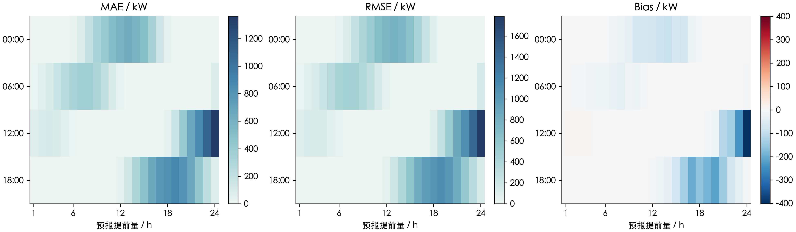

未启动全量。正式 S=20、尾部2。以下为真实附件的性能试验，不能作为正式 result3。
样本 12 个；获得所要求证书 0 个；其余仅保存可行解与间隙。单节点中位数 15.31 秒。
| date | hour | scenario_count | seconds | gap | reliable | status |
|---|---|---|---|---|---|---|
| 2025-02-01 | 0 | 17 | 15.293183 | 0.015814 | False | timelimit |
| 2025-02-01 | 6 | 17 | 15.248310 | 0.000954 | False | timelimit |
| 2025-02-01 | 12 | 17 | 15.281640 | 0.000155 | False | timelimit |
| 2025-02-01 | 18 | 17 | 15.254280 | 0.001088 | False | timelimit |
| 2025-06-21 | 0 | 20 | 15.313468 | 0.017451 | False | timelimit |
| 2025-06-21 | 6 | 20 | 15.312695 | 0.043210 | False | timelimit |
| 2025-06-21 | 12 | 20 | 15.378019 | 0.142020 | False | timelimit |
| 2025-06-21 | 18 | 20 | 15.293510 | 0.056746 | False | timelimit |
| 2025-12-21 | 0 | 20 | 15.303097 | 0.021399 | False | timelimit |
| 2025-12-21 | 6 | 20 | 15.324687 | 0.125187 | False | timelimit |
| 2025-12-21 | 12 | 20 | 15.326448 | 0.030962 | False | timelimit |
| 2025-12-21 | 18 | 20 | 15.335304 | 0.015943 | False | timelimit |
限时未达最优的样本被截断，不能据此承诺严格最优全年完成时间。下表未含辅助标定、M2和附加结算对照。
| scope | solve_count | median_hours | p90_hours | max_sample_hours |
|---|---|---|---|---|
| main_warmup_and_formal | 1432 | 6.089141 | 6.099691 | 6.117034 |
| FIV_18h_comparisons | 2004 | 8.521395 | 8.536159 | 8.560431 |
| OUV_extra_three_update_sets | 2148 | 9.133711 | 9.149536 | 9.175551 |
| M0 | 1432 | 6.089141 | 6.099691 | 6.117034 |
| nine_sensitivities_with_FIV_and_OUV | 50256 | 213.698228 | 214.068479 | 214.677145 |
